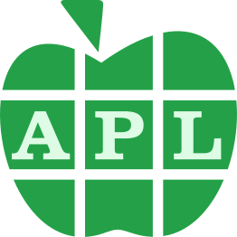
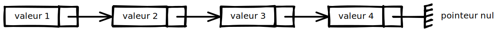
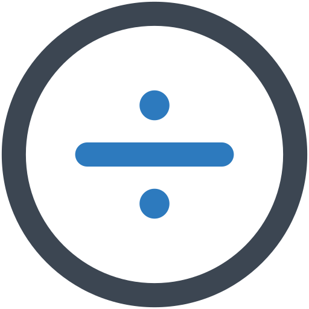
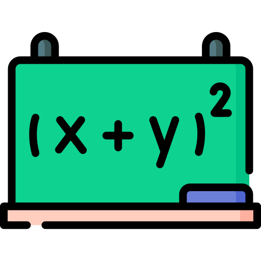

btop
Liste des notions d’Informatique


nombre de sacs à k éléments inclus dans un ensemble à n éléments
Comment corriger rapidement des erreurs d’orthographe
Liste des notions de Mathématiques
ensemble de tous les sous-ensembles
présentation du raccourci <leader> dans vim
